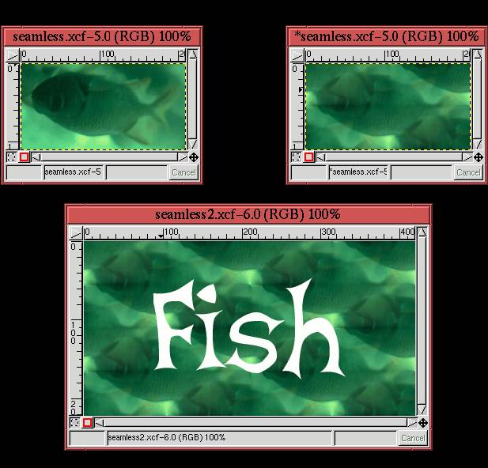
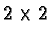

Next: 9.5 Web-Safe Color
Up: 9. Web-Centric GIMP
Previous: 9.3 Type Effects
9.4 Tileable Backgrounds
Most Web browsers can use a small image to construct a tiled
background for Web pages. Normally the background image should be
subtle enough to avoid interfering with text and other graphics, and
this usually means that the image should be seamlessly tileable.
Seamless means that you should not be able to see the edges between
adjacent copies of the image.
Any image can be made to tile seamlessly in the GIMP. The Make
Seamless
plug-in found in the Image:Filters/Map menu does the trick.
Figure 9.22
Figure 9.22:
Using the Plug-in Make Seamless
|  |
illustrates the use of this plug-in.
Figure 9.22(a) shows a small image of a fish,
and Figure 9.22(b) shows the result of using
the Make Seamless plug-in on it. The effect of tiling with the
modified image can be tested by running the Tile plug-in (the Tile
plug-in is also found in the Image:Filters/Map menu). The Tile plug-in tiles an image horizontally and vertically a specified
numbers of times. The result of using Tile on the image in
Figure 9.22(b) is shown in
Figure 9.22(c). The image is displayed as a

tiled array with some white text placed over it. The text
was made using the Beta Dance font at a size of 150 pixels.
Next: 9.5 Web-Safe Color
Up: 9. Web-Centric GIMP
Previous: 9.3 Type Effects
©2000 Gimp-Savvy.com